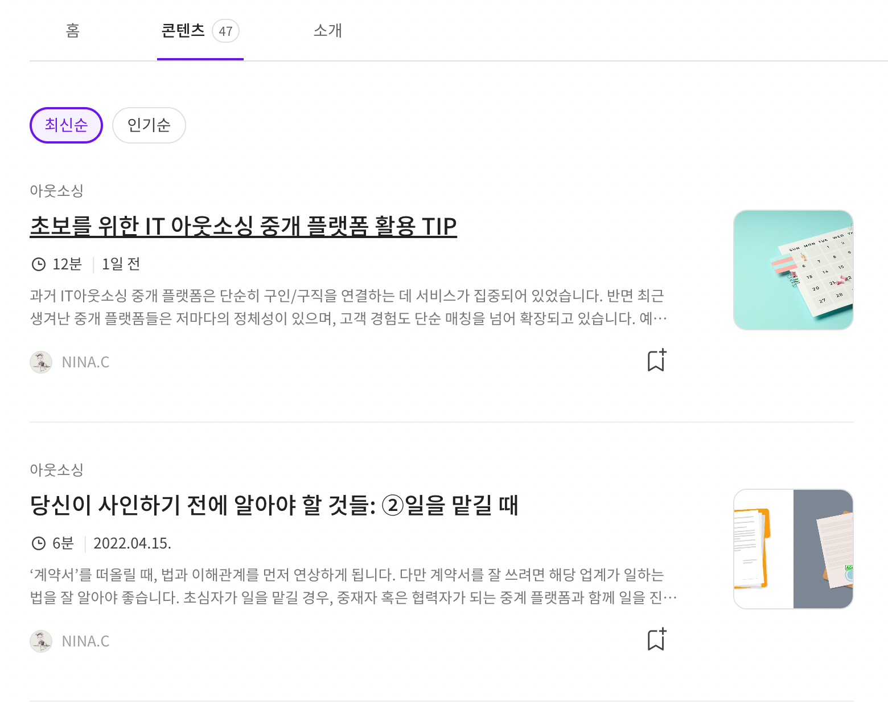
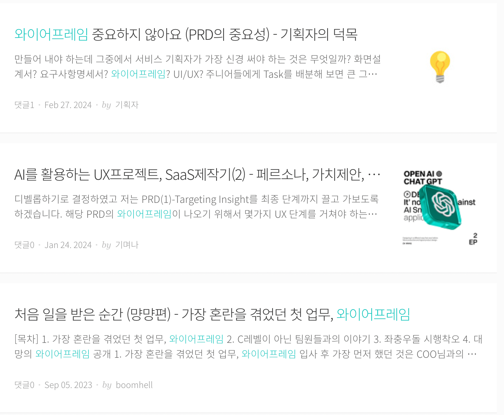

요즘 IT
용어 이해·시리즈 탐색·이메일 인증에서 끊기는 학습 흐름을 어떻게 개선할까?
IT 실무자의 경험과 인사이트를 나누는 실무 콘텐츠 플랫폼.
학습 목적본문 밖으로 나가야 하는 용어 검색, 흩어진 시리즈, 이메일 오입력 후 복구 동선을 분석했습니다. 본문 안 AI 설명·시리즈 연결·검색어 강조·인증 정보 수정 경로를 개선안으로 정리했습니다.
개인 학습 기록 · 관찰한 경험, 기획 의도에 대한 해석, 개선 제안을 구분해 정리했습니다. 수치·요금·정책은 분석 당시 조사한 자료이며 현재 기준이나 직접 만든 성과가 아닙니다.
01사용자와 해결 방향
누구를 위한 서비스인가빠르게 변하는 실무 지식과 트렌드를 익히려는 IT 업계의 학습자.
Why · 사용자가 찾는 이유
변화가 빠른 IT 분야의 지식과 실무 경험을 배우고 싶지만, 흩어진 정보에서 내 업무와 수준에 맞는 내용을 찾고 이해하기 어렵다.
What · 제공 경험과 해결 방식
IT 실무자의 경험과 주제별 콘텐츠를 모아 제공한다. 검색·큐레이션과 AI 질의·메모 등 읽기 도구로 필요한 정보를 찾고 이해하며 기록하도록 돕는다.
독자가 다시 저자가 되는 학습 생태계
개발·디자인·기획·데이터·전략·마케팅 실무자가 경험과 시행착오를 나누고, 독자가 성장해 다시 콘텐츠를 제공하는 순환으로 이해했다. 원문에서 26~35세 실무자 비중과 학생·주니어·시니어의 다양한 학습 수요를 관찰했다.
02핵심 기능과 벤치마킹
- IT 중심 큐레이션
- 특정 분야의 실무 지식에 집중해 탐색 범위를 좁힘.
- 물어봐 AI
- 콘텐츠에서 필요한 내용을 질문으로 찾는 접점.
- 표시·메모·독자 정보
- 중요한 내용을 남기고 자신과 관련된 읽기 맥락을 확인.
비교해서 살펴본 지점
- 퍼블리·브런치
- 주제의 범위와 구체성, 콘텐츠를 고르는 단서를 비교.
전문성·편의성·신뢰성을 만드는 단서
- 콘텐츠 공급
- 실무 저자와 쿠팡·토스페이먼츠·넷마블·릴레잇·pxd·AB180·딜라이트룸·버드뷰 등 기술 블로그 제휴를 조사.
- AI와 문구
- IT 질문·네트워크 기초 등 구체적인 예시가 타깃의 필요를 드러내고, 많은 글 중 필요한 정보만 찾도록 안내한다고 해석. 당시 비교 서비스와의 차별점으로 기록.
- 독자 정보
- 읽은 사람의 경력·스킬·직무를 회원과 비회원에게 다르게 보여 학습 방향 판단과 회원 전환을 동시에 지원.
- 벤치마킹
- 큰 업무 주제를 다루는 퍼블리, 개인 경험 중심의 브런치와 비교해 IT 키워드의 구체성에 주목.
03사용자 흐름과 기획 의도
관찰한 경험
- IT 중심 큐레이션, AI 질의, 독자 직무·경력 정보, 형광펜·메모 기능을 분석했습니다.
- 이메일 인증 오류 후 수정 동선, 흩어진 시리즈 글, 검색어 강조 부재를 불편으로 기록했습니다.
왜 이렇게 설계했을까 · 나의 해석
- 전문적인 콘텐츠라도 독자의 배경지식은 다를 수 있어 읽는 위치에서 바로 질문할 수 있는 보조가 필요하다고 봤습니다.
- 회원 전환과 정보 탐색을 돕는 요소도 오류를 수정하거나 이전 맥락을 이어갈 수 있어야 한다고 정리했습니다.
04문제와 개선 제안
Pain Point · 걸리는 지점
- 낯선 용어를 이해하려면 본문 밖에서 다시 검색해야 한다.
- 이메일 입력 오류 이후 인증·수정 경로가 막히는 경험을 기록했다.
- 시리즈가 섞여 있고 검색어 강조가 없어 원하는 글을 찾기 번거롭다.
내가 바꿔본다면
- 선택한 문장·단어에서 AI 설명을 요청하는 읽기 보조 기능.
- 이메일 오입력 수정 경로, 시리즈 묶음과 이전·다음 글, 검색 결과 키워드 강조 제안.
시리즈와 검색의 연결을 보완하는 참고 화면

크게 보기 ↗
크게 보기 ↗05장점과 아쉬운 지점
좋았던 점
- 구체적인 실무 주제와 읽기 도구가 목적 학습을 돕는다.
아쉬운 점 · 더 살필 점
- 탐색·인증·시리즈 연결에서 발생하는 작은 단절이 학습 흐름을 끊는다.
06내가 주목한 점
기획에 가져갈 기준
- 본문을 떠나지 않고 질문하는 기능은 학습의 흐름을 보존할 수 있다.
- 입력값 검증과 오류 복구 경로를 함께 설계할 것.